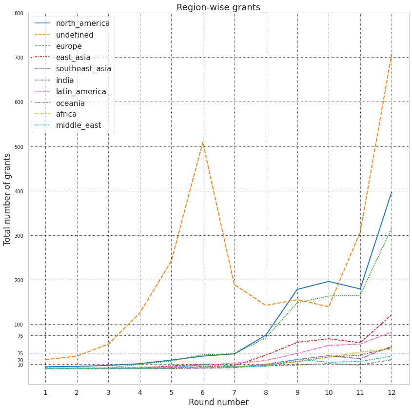

This report aims to show some trends within Gitcoin grants rounds 1 through 12.
Let's begin with some global stats
As can bee seen in the following figure, the next round's % of new to total grants should hover around 20-30%. Rounds 9 trough 11 could be regarded as some sort of new grants' winter where the % of new grants has fallen sharply by almost 50%.

Round 8 saw the biggest increase in crowdfunds, almost ~7x! then things started to slow down across the next three rounds. It was round 12 where grants enjoyed a good 2x increase in crowdfunds compared the the previous round.
Round 12 is specially interesting in that every $1 of crowdfunds is matched with $1 in the matching pool on average.
Round 8 seems to be the bull market of gitcoin grants where total contributions spiked by ~4-5x followd by more than ~50% increase every next round! Expecting a 30% increase in total contributions in the next round(13) should not be ruled out.
Another subtle point to pay attention to is how on average every unique contribution seems to result in ~ $15 of raised funds, at least what appears to be the case in the last 4 rounds. Please note that this measure is a bit controversial and needs furthur research to clarify things.
undefined refers to those grants whose founders have decided to not disclose their location.

Community and dApp Tech are close rivals here! Cautios here as some grants could be housed within both categories.

As Gitcoin ages, it seems that more people are introduced to it. Here we can see that all regions are showing organic growth.
This is an interesting chart! People have given up building Gitcoin, either tracks have been updated(=> dGov) or there are not much to build on Gitcoin anymore?! DAOs seem to be gaining momentum starting with round 9 and NFTs show rise and fall similar to the market cap fluctuations. Oh, why Crypto for Black Lives died btw?

Assuming it takes $5 worth of energy to create a grant on Gitcoin, the following figure demonstrates what % of grants failed raise a minimum of $5 :)
Rounds 2 and 3 had the most lucky grants, almost all received some pie from the cake while round 12 saw the biggest massacre in raised funds. Round 8 is interesting in that both the total raised funds is high(~2.5m) and also less than 5% of the grants were deprived of $.

The following charts try to show how grants raise money in a region-category wise manner. Given the enormisity of the details about each round, I decided to focus on GR12 and band crowdfund earnings into smaller $ bands. You can also ignore my interpretation of charts and view the trends yourself since graphs are sorted in decreasing $ amounts. I'm a fan of infinite vertical displays :)
Overally it seems that most of the crowdfunds have been captured by the following categories: Undefined, North America, and Europe. Oceanian are more successful at attracting between $2,500 and $2,5000 while than lower amounts. Funders are also more inclined towards the range of $10,000 to $25,000 than they are to $7,500 to $10,000. Dapps appear to be the widest earning track attracting funders from $1 to $160,000.
Infra Tech still strong among funders with the widest geaographical reach in this range and the $100,000 being the highest any grant received. $10,000 apears to be the ceiling for Middle eastern grants. Eastern asian NFT grants show some strength here. $75,000 for Latin american NFT grants, wow! Indians still busy with their Dapps.
Infra Tech continues to hold the line of its market share. This range is where southern hemisphere tracks start to surronder to northern tracks, with undefined track excluded of course. Sorry, no African grants here :(. European grants closing on in north american ones. The interest in undefined grants subsides when it comes to $5,000 to $10,000 range.
Infra Tech seems to start to show off here closing on in other tracks. dGov track seems to finally shows some interest in this range too with $1,500 to $2,000 being the sweet spot. Middle easterner are more active here too with 7 grants receiving ~ $5,000 in funding. Oceanian grants failed to earn any $ here. North american grants dominate this price range again!
dGov grants must have had a hard time attracting funds between $100 and $250. Indian grants besides Dapps were failed to receive any funds in this range. Infra Tech grants show a powerful presence in the $75 to $100 range.
Well, Latin Americans are very interested in Dapps and Community grants. Almost more than 95% of the funds raised are destined to these tracks with NFTs and dGovs sharing the rest.
African grants seem to be similiar to Latin Americans. But chances of raising $ working on NFT grants are 100% for Africans. While Community and Dapps are popular here, the avg amount raised by these tracks is behind the NFT track by a big margin.
NFTs grants are very likely to disclose their region, not sure why but seems founders are less concerned about this compared to other tracks. While the opposite holds for Infra Tech grants where founders are reluctant to disclose their locations.
Overally speaking Dapps and Community grants are more likely to starve while dGov grants tend to earn something at least.
This range is also the most interesting one as it has the highest impact on QF matching pools!